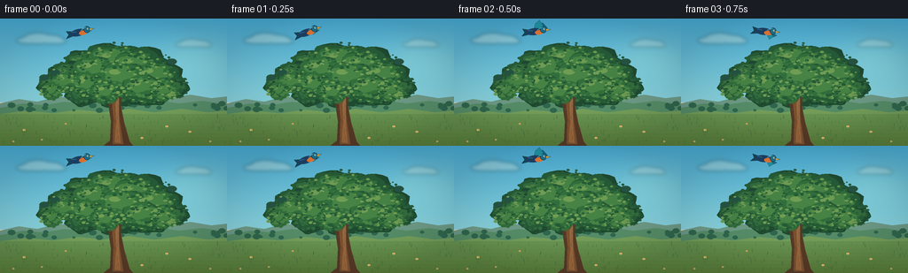
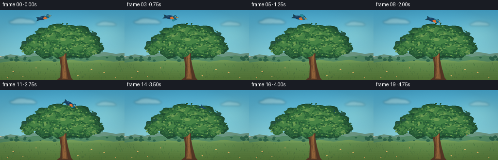
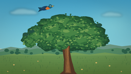
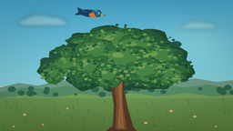
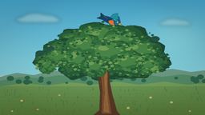
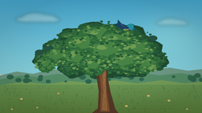

CODING AGENTS AS PIXEL WORLD MODELS
traex/DeepSeek-V4.1-Flash · dynamic_spatial_relationship_0047
点击播放 · 原生 RGB 像素
逐轮保存的候选
回放视频、检查图与代码变化。
每份候选均可单独播放。实际图片检查记录在下方工具轨迹中。
候选 01播放与检查图
点击播放 · 原生 RGB 像素


展开代码变化
--- 上一保存版本
+++ 本次保存版本
@@ -0,0 +1,416 @@
+from pathlib import Path
+import math
+
+import numpy as np
+from PIL import Image, ImageDraw, ImageFilter
+
+import artifact_io
+
+
+WIDTH = 256
+HEIGHT = 144
+FRAMES = 20
+SS = 4
+W = WIDTH * SS
+H = HEIGHT * SS
+CASE_DIR = Path(__file__).resolve().parent
+
+
+def sc(value):
+ return int(round(value * SS))
+
+
+def rgb(color):
+ return tuple(int(v) for v in color)
+
+
+def polygon(points):
+ return [(sc(x), sc(y)) for x, y in points]
+
+
+def ellipse_box(cx, cy, rx, ry):
+ return [sc(cx - rx), sc(cy - ry), sc(cx + rx), sc(cy + ry)]
+
+
+def make_sky():
+ y = np.linspace(0.0, 1.0, H, dtype=np.float32)[:, None]
+ top = np.array([72, 171, 211], dtype=np.float32)
+ middle = np.array([139, 213, 223], dtype=np.float32)
+ horizon = np.array([249, 226, 190], dtype=np.float32)
+ blend = np.clip(y / 0.66, 0.0, 1.0)
+ near = top[None, :] * (1.0 - blend) + middle[None, :] * blend
+ far = middle[None, :] * (1.0 - blend) + horizon[None, :] * blend
+ colors = np.where(y < 0.66, near, far)
+ image = np.repeat(colors[:, None, :], W, axis=1)
+
+ yy, xx = np.mgrid[0:H, 0:W]
+ glow = np.exp(-(((xx - sc(218)) / sc(58)) ** 2 + ((yy - sc(43)) / sc(34)) ** 2) * 1.7)
+ image += glow[:, :, None] * np.array([22, 15, 4], dtype=np.float32)
+ return Image.fromarray(np.clip(image, 0, 255).astype(np.uint8), "RGB").convert("RGBA")
+
+
+def draw_cloud(base, cx, cy, width, height, opacity, phase):
+ layer = Image.new("RGBA", (W, H), (0, 0, 0, 0))
+ draw = ImageDraw.Draw(layer)
+ drift = math.sin(phase) * 1.6
+ cloud_color = (255, 248, 226, opacity)
+ parts = [
+ (cx - width * 0.31 + drift, cy + height * 0.12, width * 0.27, height * 0.30),
+ (cx - width * 0.10 + drift, cy - height * 0.05, width * 0.32, height * 0.48),
+ (cx + width * 0.15 + drift, cy + height * 0.02, width * 0.29, height * 0.40),
+ (cx + width * 0.33 + drift, cy + height * 0.17, width * 0.19, height * 0.25),
+ ]
+ for x, y, rx, ry in parts:
+ draw.ellipse(ellipse_box(x, y, rx, ry), fill=cloud_color)
+ layer = layer.filter(ImageFilter.GaussianBlur(sc(2.0)))
+ base.alpha_composite(layer)
+
+
+def draw_landscape(image, frame_index):
+ draw = ImageDraw.Draw(image, "RGBA")
+
+ # A low, hazy ridge and two closer meadow bands give the scene depth.
+ draw.polygon(
+ polygon([(0, 96), (21, 91), (42, 94), (65, 88), (91, 91), (116, 86),
+ (141, 89), (166, 85), (190, 89), (215, 86), (238, 90), (256, 88),
+ (256, 111), (0, 111)]),
+ fill=(111, 156, 136, 210),
+ )
+ draw.polygon(
+ polygon([(0, 101), (26, 96), (50, 98), (73, 94), (98, 97), (124, 92),
+ (150, 95), (174, 92), (202, 96), (228, 93), (256, 97),
+ (256, 117), (0, 117)]),
+ fill=(87, 143, 105, 255),
+ )
+ draw.polygon(
+ polygon([(0, 108), (31, 104), (59, 107), (88, 103), (117, 106),
+ (145, 102), (174, 106), (205, 102), (234, 106), (256, 104),
+ (256, 144), (0, 144)]),
+ fill=(118, 160, 91, 255),
+ )
+
+ # Fine distant tree silhouettes soften the horizon.
+ rng = np.random.default_rng(119)
+ for _ in range(34):
+ x = float(rng.uniform(0, 256))
+ y = float(rng.uniform(95, 104))
+ radius = float(rng.uniform(1.2, 3.1))
+ draw.ellipse(ellipse_box(x, y, radius * 1.4, radius),
+ fill=(48, 104, 79, 115))
+
+ # Warm sunlit grass, with short wind-driven strokes.
+ for band in range(9):
+ y0 = 108 + band * 4.3
+ color = (105 - band * 2, 149 - band * 3, 82 - band * 3, 70)
+ draw.rectangle([0, sc(y0), W, sc(y0 + 4.4)], fill=color)
+ for _ in range(170):
+ x = float(rng.uniform(0, 256))
+ y = float(rng.uniform(111, 144))
+ length = float(rng.uniform(1.2, 4.4))
+ sway = 0.55 * math.sin(frame_index * 0.45 + x * 0.13)
+ shade = int(rng.uniform(74, 126))
+ draw.line(
+ [(sc(x), sc(y)), (sc(x + sway), sc(y - length))],
+ fill=(50, shade, 58, 115),
+ width=max(1, sc(0.24)),
+ )
+
+ # Sparse meadow flowers keep the foreground lively without competing with the bird.
+ flower_positions = [(27, 126), (47, 137), (214, 128), (237, 139), (188, 122),
+ (74, 119), (160, 135), (15, 139)]
+ for index, (x, y) in enumerate(flower_positions):
+ radius = 1.1 if index % 2 else 1.4
+ draw.ellipse(ellipse_box(x, y, radius, radius * 0.72),
+ fill=(250, 226, 123, 220))
+ draw.ellipse(ellipse_box(x, y, radius * 0.35, radius * 0.35),
+ fill=(217, 122, 77, 230))
+
+
+def lobe_outline(cx, cy, rx, ry, wobble, seed, count=34):
+ rng = np.random.default_rng(seed)
+ points = []
+ phase = float(rng.uniform(0, math.tau))
+ for i in range(count):
+ angle = math.tau * i / count
+ radius = 1.0 + wobble * math.sin(angle * 5 + phase) + 0.035 * math.sin(angle * 11 - phase)
+ points.append((cx + math.cos(angle) * rx * radius,
+ cy + math.sin(angle) * ry * radius))
+ return points
+
+
+def draw_canopy_lobe(draw, cx, cy, rx, ry, palette, seed, front=False):
+ dark, mid, light, highlight = palette
+ outline = lobe_outline(cx, cy, rx, ry, 0.07 if front else 0.09, seed)
+ draw.polygon(polygon(outline), fill=rgb(dark))
+ draw.polygon(polygon(lobe_outline(cx - rx * 0.08, cy - ry * 0.13,
+ rx * 0.86, ry * 0.82, 0.08, seed + 1)),
+ fill=rgb(mid))
+ draw.polygon(polygon(lobe_outline(cx - rx * 0.15, cy - ry * 0.26,
+ rx * 0.60, ry * 0.54, 0.10, seed + 2)),
+ fill=rgb(light))
+ draw.ellipse(ellipse_box(cx - rx * 0.33, cy - ry * 0.40,
+ rx * 0.23, ry * 0.18),
+ fill=rgb(highlight))
+
+ # Individual leaves break up the silhouette and create a hand-painted edge.
+ rng = np.random.default_rng(seed + 31)
+ leaf_count = 95 if front else 70
+ for _ in range(leaf_count):
+ theta = float(rng.uniform(0, math.tau))
+ radial = float(rng.uniform(0.48, 1.05))
+ x = cx + math.cos(theta) * rx * radial
+ y = cy + math.sin(theta) * ry * radial
+ leaf_rx = float(rng.uniform(0.85, 2.2)) * (1.15 if front else 1.0)
+ leaf_ry = leaf_rx * float(rng.uniform(0.38, 0.72))
+ edge = radial > 0.83
+ color = (mid if edge else (light if rng.random() > 0.42 else dark))
+ if front and rng.random() > 0.78:
+ color = highlight
+ draw.ellipse(ellipse_box(x, y, leaf_rx, leaf_ry), fill=color)
+
+
+def draw_trunk(draw):
+ trunk = [
+ (115, 145), (124, 138), (125, 116), (122, 96), (120, 81), (122, 73),
+ (127, 69), (133, 71), (137, 82), (136, 98), (140, 118), (146, 139),
+ (151, 145),
+ ]
+ draw.polygon(polygon(trunk), fill=(88, 58, 39, 255))
+ draw.polygon(
+ polygon([(127, 142), (128, 114), (126, 93), (124, 80), (128, 73),
+ (132, 73), (134, 83), (133, 101), (136, 123), (139, 142)]),
+ fill=(126, 82, 49, 255),
+ )
+ draw.polygon(
+ polygon([(129, 140), (131, 116), (130, 92), (129, 78), (133, 77),
+ (134, 93), (134, 119), (136, 141)]),
+ fill=(153, 104, 61, 255),
+ )
+
+ branch_color = (91, 58, 36, 255)
+ draw.line([(sc(128), sc(84)), (sc(99), sc(59))], fill=branch_color, width=sc(6.2))
+ draw.line([(sc(131), sc(80)), (sc(164), sc(56))], fill=branch_color, width=sc(7.1))
+ draw.line([(sc(128), sc(74)), (sc(115), sc(49))], fill=branch_color, width=sc(3.7))
+ draw.line([(sc(134), sc(82)), (sc(177), sc(70))], fill=branch_color, width=sc(4.0))
+ draw.line([(sc(126), sc(92)), (sc(92), sc(78))], fill=branch_color, width=sc(3.0))
+
+ rng = np.random.default_rng(712)
+ for _ in range(42):
+ x = float(rng.uniform(124.5, 136.5))
+ y = float(rng.uniform(78, 143))
+ length = float(rng.uniform(1.5, 5.5))
+ tilt = float(rng.uniform(-0.8, 0.8))
+ draw.line([(sc(x), sc(y)), (sc(x + tilt), sc(y + length))],
+ fill=(70, 44, 31, 105), width=max(1, sc(0.28)))
+
+
+def make_tree_layers(frame_index):
+ back = Image.new("RGBA", (W, H), (0, 0, 0, 0))
+ back_draw = ImageDraw.Draw(back, "RGBA")
+
+ back_palette = ((31, 75, 49, 255), (39, 92, 56, 255),
+ (52, 109, 62, 255), (73, 127, 70, 255))
+ back_lobes = [
+ (128, 53, 42, 25), (99, 56, 29, 21), (159, 55, 34, 23),
+ (78, 67, 25, 18), (181, 68, 27, 19), (112, 72, 29, 20),
+ (151, 72, 32, 21), (131, 84, 25, 17), (94, 85, 20, 14),
+ (170, 85, 21, 14), (58, 76, 16, 12), (199, 78, 14, 11),
+ ]
+ for i, lobe in enumerate(back_lobes):
+ draw_canopy_lobe(back_draw, *lobe, back_palette, 100 + i, front=False)
+
+ # Shadowed foliage and branch tips fill the interior of the crown.
+ for i in range(18):
+ angle = i * 2.399
+ radius = 14 + (i % 6) * 7
+ cx = 128 + math.cos(angle) * radius * 1.6
+ cy = 65 + math.sin(angle) * radius * 0.62
+ back_draw.ellipse(ellipse_box(cx, cy, 5.4, 3.4), fill=(25, 66, 44, 220))
+
+ front = Image.new("RGBA", (W, H), (0, 0, 0, 0))
+ front_draw = ImageDraw.Draw(front, "RGBA")
+
+ # The trunk is in front of the bird and foliage sits in front of both.
+ draw_trunk(front_draw)
+
+ sway = math.sin(frame_index * 0.36) * 0.35
+ front_palette = ((38, 91, 54, 255), (50, 111, 60, 255),
+ (72, 132, 70, 255), (112, 158, 84, 255))
+ front_lobes = [
+ (128 + sway, 48, 33, 16), (153 + sway, 54, 27, 17),
+ (106 + sway, 59, 24, 16), (175 + sway, 65, 23, 15),
+ (139 + sway, 67, 29, 17), (98 + sway, 75, 19, 14),
+ (161 + sway, 79, 24, 15), (119 + sway, 84, 18, 12),
+ (185 + sway, 82, 15, 11), (74 + sway, 72, 16, 11),
+ (58 + sway, 82, 12, 9),
+ ]
+ for i, lobe in enumerate(front_lobes):
+ draw_canopy_lobe(front_draw, *lobe, front_palette, 500 + i, front=True)
+
+ # A few crisp sunlit leaves around the top edge.
+ rng = np.random.default_rng(991)
+ for _ in range(70):
+ x = float(rng.uniform(49, 207))
+ y = float(rng.uniform(32, 94))
+ if (x - 128) ** 2 / 88 ** 2 + (y - 66) ** 2 / 39 ** 2 > 1.02:
+ continue
+ if rng.random() < 0.64:
+ continue
+ leaf = float(rng.uniform(0.8, 1.8))
+ color = (124, 169, 89, 220) if rng.random() > 0.45 else (86, 144, 74, 225)
+ front_draw.ellipse(ellipse_box(x, y, leaf * 1.25, leaf * 0.62), fill=color)
+
+ return back, front
+
+
+KEY_POINTS = [
+ (0.00, 91, 15.0),
+ (0.14, 95, 14.3),
+ (0.27, 106, 15.8),
+ (0.39, 120, 19.5),
+ (0.50, 135, 24.5),
+ (0.61, 150, 31.5),
+ (0.71, 164, 40.0),
+ (0.80, 176, 51.0),
+ (0.88, 183, 63.0),
+ (1.00, 188, 80.0),
+]
+
+
+def catmull_rom(p0, p1, p2, p3, s):
+ return 0.5 * (
+ 2.0 * p1
+ + (-p0 + p2) * s
+ + (2.0 * p0 - 5.0 * p1 + 4.0 * p2 - p3) * s * s
+ + (-p0 + 3.0 * p1 - 3.0 * p2 + p3) * s * s * s
+ )
+
+
+def bird_position(t):
+ if t <= KEY_POINTS[0][0]:
+ return np.array(KEY_POINTS[0][1:], dtype=np.float64)
+ if t >= KEY_POINTS[-1][0]:
+ return np.array(KEY_POINTS[-1][1:], dtype=np.float64)
+ for i in range(len(KEY_POINTS) - 1):
+ t1 = KEY_POINTS[i][0]
+ t2 = KEY_POINTS[i + 1][0]
+ if t1 <= t <= t2:
+ p0 = np.array(KEY_POINTS[max(0, i - 1)][1:], dtype=np.float64)
+ p1 = np.array(KEY_POINTS[i][1:], dtype=np.float64)
+ p2 = np.array(KEY_POINTS[i + 1][1:], dtype=np.float64)
+ p3 = np.array(KEY_POINTS[min(len(KEY_POINTS) - 1, i + 2)][1:], dtype=np.float64)
+ s = (t - t1) / (t2 - t1)
+ return catmull_rom(p0, p1, p2, p3, s)
+ return np.array(KEY_POINTS[-1][1:], dtype=np.float64)
+
+
+def local_polygon(points, scale):
+ return [(sc(scale + x), sc(scale + y)) for x, y in points]
+
+
+def draw_bird(frame_index):
+ t = frame_index / (FRAMES - 1)
+ pos = bird_position(t)
+ ahead = bird_position(min(1.0, t + 0.012))
+ behind = bird_position(max(0.0, t - 0.012))
+ velocity = ahead - behind
+ if np.linalg.norm(velocity) < 0.01:
+ velocity = np.array([1.0, 0.0])
+ angle = math.degrees(math.atan2(velocity[1], velocity[0]))
+
+ # A 40 px local canvas keeps the wing silhouettes clean when rotated.
+ local_size = 44
+ bird = Image.new("RGBA", (sc(local_size), sc(local_size)), (0, 0, 0, 0))
+ draw = ImageDraw.Draw(bird, "RGBA")
+ c = local_size / 2
+ phase = math.tau * (0.55 + 7.0 * t)
+ flap = math.sin(phase)
+ flap_far = math.sin(phase - 0.42)
+
+ outline = (19, 47, 67, 255)
+ wing_dark = (22, 104, 132)
+ wing_mid = (33, 150, 166)
+ wing_light = (116, 207, 209)
+
+ def wing(offset_x, tip_scale, fill, alpha):
+ tip_y = -11.5 * flap * tip_scale + 0.7
+ pts = [
+ (c - 4 + offset_x, c),
+ (c - 1 + offset_x, c - 4.0 + tip_y * 0.45),
+ (c + 4 + offset_x, c + tip_y - 1.5),
+ (c + 8.5 + offset_x, c + tip_y * 0.42 + 0.5),
+ (c + 4 + offset_x, c + 1.5),
+ (c + 1 + offset_x, c + 2.0),
+ ]
+ draw.polygon(polygon(pts), fill=rgb(fill) + (alpha,), outline=outline, width=max(1, sc(0.35)))
+
+ # Far wing, tail, and near wing create a readable flapping silhouette.
+ wing(3.5, 0.72, wing_dark, 225)
+ draw.polygon(
+ polygon([(c - 5, c - 1.5), (c - 16, c - 4.5), (c - 14, c),
+ (c - 18, c + 4.0), (c - 5, c + 2.2)]),
+ fill=(24, 74, 94, 255),
+ outline=outline,
+ width=max(1, sc(0.45)),
+ )
+ wing(0, 1.0, wing_mid, 255)
+
+ # Body, warm breast, head, eye, and beak.
+ draw.ellipse(ellipse_box(c - 3.2, c + 0.2, 9.0, 3.9), fill=(29, 67, 103, 255))
+ draw.ellipse(ellipse_box(c + 2.2, c + 1.4, 4.8, 2.5), fill=(230, 120, 55, 255))
+ draw.ellipse(ellipse_box(c + 7.4, c - 1.0, 3.7, 3.7), fill=(28, 116, 144, 255),
+ outline=outline, width=max(1, sc(0.4)))
+ draw.polygon(
+ polygon([(c + 10.2, c - 1.8), (c + 15.4, c - 0.3), (c + 10.2, c + 1.0)]),
+ fill=(235, 174, 55, 255),
+ outline=outline,
+ width=max(1, sc(0.22)),
+ )
+ draw.ellipse(ellipse_box(c + 8.3, c - 1.6, 0.9, 0.9), fill=(251, 247, 222, 255))
+ draw.ellipse(ellipse_box(c + 8.55, c - 1.55, 0.36, 0.42), fill=(13, 27, 38, 255))
+
+ # Wing markings catch the sky and separate the two wing shapes.
+ draw.line([(sc(c + 0.5), sc(c - 1.5)), (sc(c + 6.8), sc(c - 4.1))],
+ fill=wing_light + (225,), width=max(1, sc(0.65)))
+ draw.line([(sc(c - 5.0), sc(c - 1.0)), (sc(c - 10.2), sc(c - 1.8))],
+ fill=(103, 181, 188, 180), width=max(1, sc(0.38)))
+
+ bird = bird.rotate(-angle, resample=Image.Resampling.BICUBIC, center=(sc(c), sc(c)))
+ layer = Image.new("RGBA", (W, H), (0, 0, 0, 0))
+ left = int(round(sc(pos[0] - c)))
+ top = int(round(sc(pos[1] - c)))
+ layer.alpha_composite(bird, (left, top))
+ return layer
+
+
+def render_frame(frame_index):
+ image = make_sky()
+ draw_cloud(image, 48, 23, 51, 13, 72, frame_index * 0.08)
+ draw_cloud(image, 218, 28, 38, 10, 58, frame_index * 0.08 + 1.2)
+ draw_landscape(image, frame_index)
+
+ back_tree, front_tree = make_tree_layers(frame_index)
+ image.alpha_composite(back_tree)
+ image.alpha_composite(draw_bird(frame_index))
+ image.alpha_composite(front_tree)
+
+ # Gentle vignette and final film grain keep the flat illustration cohesive.
+ yy, xx = np.mgrid[0:H, 0:W]
+ dx = (xx - W / 2) / (W / 2)
+ dy = (yy - H / 2) / (H / 2)
+ vignette = np.clip(1.0 - 0.10 * (dx * dx + dy * dy), 0.88, 1.0)
+ array = np.asarray(image.convert("RGB"), dtype=np.float32) * vignette[:, :, None]
+ rng = np.random.default_rng(4000 + frame_index)
+ grain = rng.normal(0.0, 1.25, (H, W, 1)).astype(np.float32)
+ array = np.clip(array + grain, 0, 255).astype(np.uint8)
+ frame = Image.fromarray(array, "RGB").resize((WIDTH, HEIGHT), Image.Resampling.LANCZOS)
+ return np.asarray(frame, dtype=np.uint8)
+
+
+def main():
+ frames = np.stack([render_frame(i) for i in range(FRAMES)])
+ artifact_io.save(frames, CASE_DIR)
+
+
+if __name__ == "__main__":
+ main()
候选 02播放与检查图
点击播放 · 原生 RGB 像素

展开代码变化
--- 上一保存版本
+++ 本次保存版本
@@ -1,6 +1,7 @@
from pathlib import Path
import math
+import cv2
import numpy as np
from PIL import Image, ImageDraw, ImageFilter
@@ -46,7 +47,7 @@
yy, xx = np.mgrid[0:H, 0:W]
glow = np.exp(-(((xx - sc(218)) / sc(58)) ** 2 + ((yy - sc(43)) / sc(34)) ** 2) * 1.7)
image += glow[:, :, None] * np.array([22, 15, 4], dtype=np.float32)
- return Image.fromarray(np.clip(image, 0, 255).astype(np.uint8), "RGB").convert("RGBA")
+ return Image.fromarray(np.clip(image, 0, 255).astype(np.uint8)).convert("RGBA")
def draw_cloud(base, cx, cy, width, height, opacity, phase):
@@ -403,7 +404,7 @@
rng = np.random.default_rng(4000 + frame_index)
grain = rng.normal(0.0, 1.25, (H, W, 1)).astype(np.float32)
array = np.clip(array + grain, 0, 255).astype(np.uint8)
- frame = Image.fromarray(array, "RGB").resize((WIDTH, HEIGHT), Image.Resampling.LANCZOS)
+ frame = Image.fromarray(array).resize((WIDTH, HEIGHT), Image.Resampling.LANCZOS)
return np.asarray(frame, dtype=np.uint8)
@@ -411,6 +412,18 @@
frames = np.stack([render_frame(i) for i in range(FRAMES)])
artifact_io.save(frames, CASE_DIR)
+ writer = cv2.VideoWriter(
+ str(CASE_DIR / "output.mp4"),
+ cv2.VideoWriter_fourcc(*"mp4v"),
+ 4.0,
+ (WIDTH, HEIGHT),
+ )
+ if not writer.isOpened():
+ raise RuntimeError("Could not open MP4 writer")
+ for frame in frames:
+ writer.write(cv2.cvtColor(frame, cv2.COLOR_RGB2BGR))
+ writer.release()
+
if __name__ == "__main__":
main()
可观测工具轨迹
实际执行的命令与返回图片。
命令 1exit 0
/bin/bash -c "sed -n '1,240p' GENERATION_RULES.md"
命令 2exit 0
/bin/bash -c 'cat task_spec.json'
命令 3exit 0
/bin/bash -c 'cat prompt.txt'
命令 4exit 0
/bin/bash -c "find . -maxdepth 2 -type f -printf '%p\\n' | sort && printf '\\nTOOLS\\n' && command -v ffmpeg && command -v blender || true && command -v python3 && python3 - <<'PY' import importlib.util for m in ['PIL','numpy','cv2','moviepy','imageio','torch','matplotlib']: print(m, bool(importlib.util.find_spec(m))) PY"
命令 5exit 0
/bin/bash -c "sed -n '1,260p' artifact_io.py"
命令 6exit 1
/bin/bash -c 'python3 generate.py'
命令 7exit 1
/bin/bash -c 'python3 generate.py'
命令 8exit 0
/bin/bash -c 'rg -n "width=" generate.py'
命令 9exit 1
/bin/bash -c 'python3 generate.py'
命令 10exit 0
/bin/bash -c 'rg -n "wing_(dark|mid|light)" generate.py'
命令 11exit 0
/bin/bash -c 'python3 generate.py'
命令 12exit 0
/bin/bash -c "python3 - <<'PY'
import cv2, numpy as np, json
from pathlib import Path
p=Path('.')
frames=sorted((p/'frames').glob('*.png'))
print('frames',len(frames), 'first', frames[0].name, 'last',frames[-1].name)
z=np.load(p/'pixels.npz')['pixels']
print('pixels',z.shape,z.dtype)
for name in [frames[0],frames[-1]]:
im=cv2.imread(str(name)); print(name, im.shape)
spec=json.loads((p/'task_spec.json').read_text())
writer=cv2.VideoWriter(str(p/'output.mp4'), cv2.VideoWriter_fourcc(*'mp4v'), spec['fps'], (spec['width'],spec['height']))
print('writer',writer.isOpened())
for f in frames:
writer.write(cv2.imread(str(f)))
writer.release()
print('mp4 bytes',(p/'output.mp4').stat().st_size)
PY"命令 13exit 0
/bin/bash -c "python3 - <<'PY'
import cv2, numpy as np
from pathlib import Path
cap=cv2.VideoCapture('output.mp4')
print('opened',cap.isOpened(),'frames',int(cap.get(cv2.CAP_PROP_FRAME_COUNT)),'fps',cap.get(cv2.CAP_PROP_FPS),'size',int(cap.get(cv2.CAP_PROP_FRAME_WIDTH)),int(cap.get(cv2.CAP_PROP_FRAME_HEIGHT)))
means=[]
while True:
ok, frame=cap.read()
if not ok: break
means.append(float(frame.mean()))
cap.release()
print('decoded',len(means),'mean range',round(min(means),2),round(max(means),2))
PY"命令 14exit 0
/bin/bash -c "python3 generate.py && python3 - <<'PY'
from pathlib import Path
import cv2, numpy as np
p=Path('.')
frames=np.stack([cv2.cvtColor(cv2.imread(str(p/'frames'/f'{i:02d}.png')),cv2.COLOR_BGR2RGB) for i in range(20)])
assert frames.shape==(20,144,256,3) and frames.dtype==np.uint8
cap=cv2.VideoCapture(str(p/'output.mp4'))
assert cap.isOpened()
assert int(cap.get(cv2.CAP_PROP_FRAME_COUNT))==20
assert round(cap.get(cv2.CAP_PROP_FPS),1)==4.0
n=0
while True:
ok, im=cap.read()
if not ok: break
assert im.shape==(144,256,3)
n+=1
cap.release()
assert n==20
z=np.load(p/'pixels.npz')['pixels']
assert z.shape==(144,256,20)
print('validated: 20 RGB frames, 256x144, 4 fps; decoded MP4 frames:',n)
PY"视觉工具实际返回图片 1

视觉工具实际返回图片 2

视觉工具实际返回图片 3

视觉工具实际返回图片 4
视觉工具实际返回图片 5

视觉工具实际返回图片 6

视觉工具实际返回图片 7
保存候选 2 份；完成命令 14 次；可验证图片返回 7 张。原始 API 响应与完整日志保留在本地。